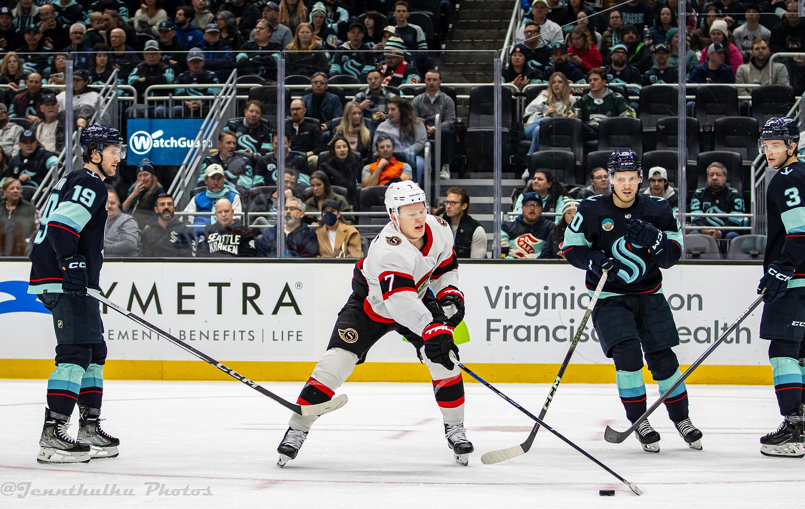
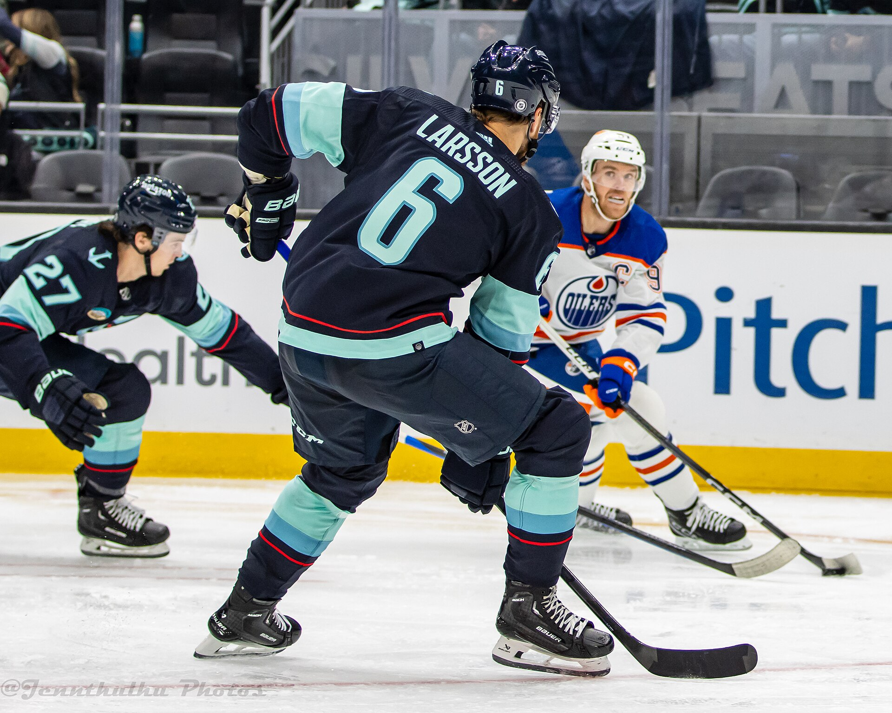

Offseason Buzz
The trade deadline gets most of the attention during the season, but some of the moves that shape a Stanley Cup run happen months earlier. Here is what actually moved the needle this offseason.
The Tkachuk Trade

Florida's biggest swing of the summer sent four draft picks, the 9th and 25th picks in the 2026 draft, a conditional 2029 first-rounder, and a 2027 second-rounder, to Ottawa for Brady Tkachuk. The move reunites Brady with older brother Matthew, sons of former NHL power forward Keith Tkachuk, on the same roster for the first time in their careers. Brady brings 463 points across 572 regular-season games and a physical style reflected in 821 career penalty minutes, with two years left on his contract. For a front office that recently won a Stanley Cup, giving up that much draft capital says everything about how short Florida's championship window is expected to stay open (NHL.com).
McDavid's Message

Connor McDavid could have waited for unrestricted free agency and set the market. Instead, he signed a two-year, $25 million extension with Edmonton, a shorter deal than almost anyone expected from the sport's best player. The read across the league was consistent that McDavid isn't committing long-term, he's giving the Oilers a two-year window to build a roster capable of winning it all (NHL.com).
Eichel Stays in Vegas
While McDavid kept his future uncertain, Jack Eichel resolved his. The Golden Knights center signed an eight-year extension worth more than $100 million to remain in Vegas long-term, a deal that locks in one of the league's top centers through the back half of his prime and signals Vegas intends to keep competing for titles rather than rebuild around him (CBS Sports).